The health of pregnant mothers, infants, children, and adolescents is an important public health issue. Maternal and child health services such as prenatal care, primary and preventive care, immunizations, and medical treatment are vital, because they have the potential to make a difference in health status and health costs over a whole lifetime. The maternal and child health status indicators in this chapter include inadequate prenatal care, preconception health care coverage, unintended pregnancy, preconception overweight and obesity, birth defects, and infant mortality.
Inadequate Prenatal Care
Prenatal care is vitally important to the health of pregnant women and their babies. The goal of prenatal care is to identify and try to reduce risks of adverse pregnancy and birth outcomes [1]. Inadequate prenatal care has been associated with an increased risk of low birth weight births, preterm births, infant mortality, and maternal mortality [2]. Most policies and programs that attempt to improve pregnancy outcomes focus on improving the utilization of prenatal care services [3].
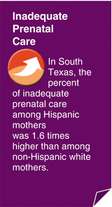
African-American and Hispanic mothers are more likely than non-Hispanic white mothers to obtain prenatal care late or not at all [4]. Adolescent mothers are also at a higher risk of obtaining either late or no prenatal care than mothers of other ages [2, 5]. Low income has been shown to be a major predictor of insufficient prenatal care [2].
Inadequate Prenatal Care in South Texas
In 2005–2009, an estimated 37.5 % of mothers in South Texas received inadequate prenatal care (defined as beginning prenatal care either after the first trimester of pregnancy or not receiving prenatal care at all). This estimate was slightly lower than the percent of inadequate prenatal care seen in the rest of Texas (40.4 %) (Fig. 6.1). Even though the percentage of both Hispanic and non-Hispanic white mothers receiving inadequate prenatal care in South Texas was less than their counterparts in the rest of Texas, Hispanic mothers were still at a much higher risk of having inadequate prenatal care than non-Hispanic whites (Fig. 6.1). In South Texas, the percent of inadequate prenatal care among Hispanic mothers (40.3 %) was 1.6 times higher than the percent of inadequate prenatal care among non-Hispanic white mothers (24.5 %).
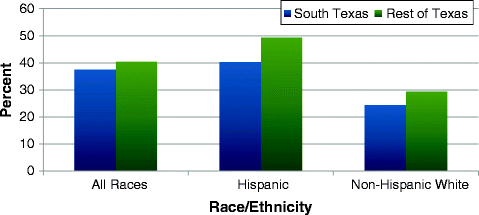
Fig. 6.1
Percent of mothers with inadequate prenatal care by location and race/ethnicity, 2005–2009. Source: Center for Health Statistics Data Management Team, Texas Department of State Health Services
In South Texas, a higher percentage of inadequate prenatal care was seen among younger maternal age groups than among the older maternal age groups. More than 50 % of the mothers in the two youngest maternal age groups (aged 10–14 and 15–17) had inadequate prenatal care, whereas only about 30 % of mothers aged 35 and older had inadequate prenatal care (Fig. 6.2).
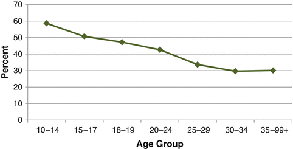
Fig. 6.2
Percent of mothers with inadequate prenatal care by age group, 2005–2009. Source: Center for Health Statistics Data Management Team, Texas Department of State Health Services
Bexar County had a lower percentage of mothers with inadequate prenatal care (29.4 %) than all of South Texas (37.5 %). However, the Lower Rio Grande Valley area had a higher percentage of inadequate prenatal care (45.2 %) than South Texas, and the rate of inadequate prenatal care in Webb County (38.1 %) was similar to South Texas as a whole. Figure 6.3 illustrates the differences in percentages among Hispanic and non-Hispanic white mothers in each of these locations. It also shows the percent of mothers with inadequate prenatal care for African-American mothers in South Texas and Bexar County, where there were sufficient numbers to calculate an estimate for this group.
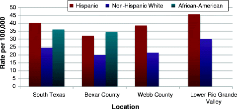
Fig. 6.3
Percent of mothers with inadequate prenatal care in selected South Texas locations by race/ethnicity, 2005–2009. Source: Center for Health Statistics Data Management Team, Texas Department of State Health Services
Preconception Care and Health Care Coverage Before Pregnancy
The preconception period is critically important because health conditions and behaviors during this time period can impact the health outcomes of both mother and baby. Early prenatal care (defined as prenatal care that begins during the first trimester) is also very important. However, most fetal organs have already been formed by the time of the first early prenatal care visit, and many interventions at this point are too late to prevent birth defects or other adverse maternal and infant outcomes [6, 7].
Preconception care consists of interventions that are designed to help manage, modify, and/or control risk factors that contribute to adverse maternal and infant outcomes before conception occurs. Risk factors that should be addressed in the preconception period include chronic diseases such as diabetes, high blood pressure, and heart disease; infectious diseases such as vaccine-preventable disease and HIV/AIDS; reproductive concerns such as contraception; genetic/inherited conditions such as sickle cell anemia and down syndrome; medications and medical treatment; and personal behaviors and exposures such as obesity, smoking, alcohol misuse, and folic acid supplement use [6–8].
Almost half of all pregnancies in the USA and in Texas are unintended, so preconception health care is important for all women of childbearing age and not just those planning to get pregnant. A major barrier to obtaining preconception care is lack of health care coverage, particularly for low-income women [6].
Health Care Coverage in South Texas
The percent of women with no health insurance before pregnancy was statistically significantly higher in South Texas (55.5 %) than the rest of Texas (47.2 %) (Fig. 6.4).
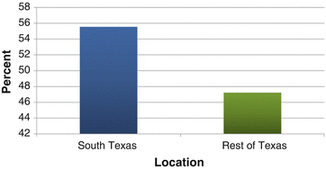
Fig. 6.4
Estimated percent of women with no health insurance before pregnancy, by location, 2004–2009. Source: Texas Pregnancy Risk Assessment Monitoring System combined year dataset, 2004–2009
The rates of no health insurance before pregnancy ranged from 45.2 % (among women aged 35 or older) to 58.2 % (among women aged 20–34) (Fig. 6.5).
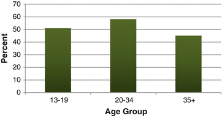
Fig. 6.5
Estimated percent of women with no health insurance before pregnancy in South Texas by age group, 2004–2009. Source: Texas Pregnancy Risk Assessment Monitoring System combined year dataset, 2004–2009
Unintended Pregnancy
An unintended pregnancy as one that is mistimed (wanted later) or unwanted at the time of conception, and an intended pregnancy is one that is wanted at the time of conception or sooner. Understanding unintended pregnancy is essential to understanding fertility, ways to prevent unwanted pregnancies, and assessing unmet needs for contraception [9, 10]. Unintended pregnancy has been associated with an increased risk of maternal morbidity and negative health behaviors during pregnancy, such as alcohol and tobacco use and delayed prenatal care, which can have adverse health effects on infants [11].
Unintended Pregnancy in South Texas
Estimates from the Texas Pregnancy Risk Assessment Monitoring System (PRAMS) indicate that the unintended pregnancy rate in 2004–2009 was the same in South Texas as in the rest of Texas (45.6 %) (Fig. 6.6).
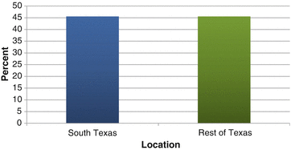
Fig. 6.6
Estimated percent of women with an unintended pregnancy, by location, 2004–2009. Source: Texas Pregnancy Risk Assessment Monitoring System combined year dataset, 2004–2009
The unintended pregnancy rate in South Texas decreased with increasing age. Women aged 13–19 had the highest rate of unintended pregnancy (66.6 %), which was twice as high as the rate among women aged 35 and older (33.3 %) (Fig. 6.7).
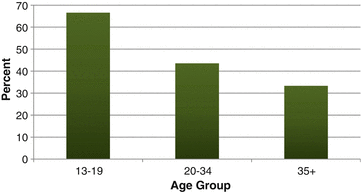
Fig. 6.7
Estimated percent of women with an unintended pregnancy in South Texas, by age group, 2004–2009. Source: Texas Pregnancy Risk Assessment Monitoring System combined year dataset, 2004–2009
Preconception Overweight and Obesity
The adverse health effects of obesity have been extensively studied and are well established. Obesity is associated with heart disease, stroke, breast and colon cancer, and type 2 diabetes. It is also associated with poor female reproductive health. Prepregnancy obesity is associated with numerous complications during pregnancy, such as gestational diabetes and preeclampsia [12, 13] and adverse pregnancy outcomes such as cesarean section [14, 15] and birth defects [16]. Because weight loss is not recommended during pregnancy, it is important to address weight issues during the preconception period.
Although health risks are better established among obese women, being overweight also carries risks including high blood pressure, type 2 diabetes, heart disease, and stroke. In the USA the overweight and obesity rate are rising fastest among women aged 20–34, which includes the prime childbearing ages of 20–24 [17].
Preconception Overweight and Obesity in South Texas
The prepregnancy overweight rate among women in South Texas (25.2 %) was similar to the rate among women in the rest of Texas (24.6 %). The prepregnancy obesity rate was statistically significantly higher in South Texas (25.8 %) than in the rest of Texas (20.8 %) (Fig. 6.8).
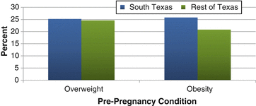
Fig. 6.8
Estimated percent of women who were overweight or obese before pregnancy, by location, 2004–2009. Source: Texas Pregnancy Risk Assessment Monitoring System combined year dataset, 2004–2009
In South Texas, 23.1 % of adolescent girls aged 13–19 and approximately 25 % of women aged 20 or older were overweight before pregnancy. The prepregnancy obesity rate increased with increasing age (Fig. 6.9).
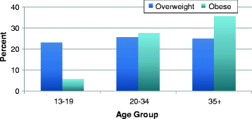
Fig. 6.9
Estimated percent of women in South Texas who were overweight or obese before pregnancy, by age group, 2004–2009. Source: Texas Pregnancy Risk Assessment Monitoring System combined year dataset, 2004–2009
Birth Defects
A birth defect is a problem in structure, function, or metabolism that occurs during fetal development. Birth defects can result in physical disabilities, mental disabilities, or death. In the USA, 3 % of babies are born with birth defects (about 120,000 babies annually). Birth defects are currently the leading cause of infant deaths in the USA, and babies with birth defects are at greater risk of illness and disability than babies without birth defects. Most birth defects occur during the first 3 months of pregnancy, when the baby is developing [18, 19].
Both genetic and environmental factors can play a role in the development of birth defects. Some common nongenetic risk factors include not getting enough folic acid, cigarette smoking, drinking alcohol, and maternal chronic health conditions like obesity or diabetes. However, about 70 % of all birth defects currently have unknown causes [19]. The birth defects mentioned in this section were evaluated because they are potentially preventable—studies have found associations between these birth defects and preventable factors such as low folic acid consumption, smoking, or obesity [20, 21].
Neural Tube Defects
Neural tube defects (NTDs) are a group of birth defects that have a common origin in the failure of the neural tube to develop properly during the first month of pregnancy. The three main types of NTDs are anencephaly, spina bifida, and encephalocele. Anencephaly is the most severe, involving absence of the skull and missing or reduced brain hemispheres and is always fatal. Spina bifida, the most commonly occurring NTD, is an incomplete closure of the spinal cord, and is not usually fatal. Encephalocele, the rarest NTD, is protrusion of part or all of the brain through a defect in the skull and may be fatal [22].
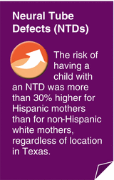
NTD prevalence in the USA is reported to be highest among Hispanics, followed by non-Hispanic whites, Native Americans, African-Americans, and then Asians. Studies have found that maternal periconceptional use of folic acid reduces the risk of NTDs. However, folic acid may not decrease NTD risk the same amount in all racial/ethnic groups, which suggests that genetic factors may be involved. Obesity has been associated with increased NTD prevalence, and studies also suggest that women with diabetes are at increased risk of having an infant with an NTD [22].
Neural Tube Defects in South Texas
The prevalence of NTDs in South Texas was 8.2 cases per 10,000 live births in 2005–2009. This was higher than the prevalence of NTDs in the rest of Texas (6.8/10,000). The risk of having a child with an NTD was more than 30 % higher for Hispanic mothers than for non-Hispanic white mothers, regardless of location in Texas (Fig. 6.10).
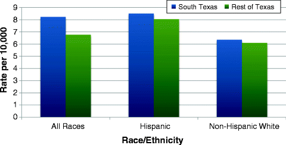
Fig. 6.10
Prevalence of neural tube defects (NTDs) by location and race/ethnicity, 2005–2009. Source: Texas Birth Defects Registry, 2005–2009 data
Oral Clefts
Oral clefts are birth defects in which the tissues of the lip or mouth do not grow together properly during fetal development. There are two types of oral clefts: cleft lip and cleft palate. Cleft lip is a groove or separation in the upper lip caused by the failure of the maxillary and median nasal processes to join together. Cleft palate is a grooved depression or opening in the roof of the mouth that occurs when the two sides of the palate do not fuse properly. Cleft lip and cleft palate can occur together, separately, or along with other defects. Cleft lip is more common than cleft palate. Oral clefts often occur together with many different chromosomal abnormalities and syndromes [23].
The latest USA estimates report that the prevalence of cleft lip with or without cleft palate is 10.6 per 10,000 live births, and the prevalence of cleft palate alone is 6.4/10,000 [24]. Oral clefts are more prevalent in male infants than female infants [23, 25]. In the USA, Asians have the highest risk of oral clefts [23, 26]. In Texas, Hispanics and non-Hispanic whites show the highest risks for cleft lip with/without cleft palate, non-Hispanic whites are highest for cleft palate, and African-Americans are lowest for both [27].
Environmental factors are considered less important than genetic factors in the etiology of oral clefts. However, maternal smoking has been associated with oral clefts in offspring, and studies have found that alcohol might increase the risk of oral clefts. Maternal intake of anticonvulsant medications and vasoactive drugs has also been associated with an increased risk of oral clefts. Maternal use of multivitamins has been found to reduce the risk of oral clefts, and several studies have observed a decreased risk of oral clefts with folic acid use [23].
Oral Clefts in South Texas
The prevalence of all oral clefts in South Texas (17.3/10,000) was slightly higher than the oral cleft prevalence in the rest of Texas (16.6/10,000) in 2005–2009. Race/ethnicity and sex patterns of oral cleft prevalence in South Texas were similar to what was seen in the rest of Texas.
Other Selected Birth Defects
Studies have suggested that a reduced risk of several other birth defects may be associated with multivitamin and folic acid supplement intake, including some heart defects [28, 29],limb reduction defects [30, 31], pyloric stenosis [32], and omphalocele [33]. In addition to NTDs and oral clefts, Canfield et al. (2005) observed decreases in birth prevalence for transposition of the great arteries, upper limb reduction defects, pyloric stenosis, and omphalocele after US grain fortification with folic acid. A decrease in prevalence of common truncus among Hispanics was also seen [20].
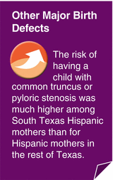
Omphalocele is an abdominal wall defect in which an infant’s bowels and other abdominal organs herniate into the umbilical cord, causing the intestines to stick out of the belly button [34, 35]. Omphalocele is associated with low birth weight, preterm birth, multiple gestation pregnancies, and intrauterine growth retardation. Mothers who are obese might be at increased risk of having an infant with omphalocele [34].
Common truncus and transposition of the great arteries are both conotruncal heart defects or outflow tract defects. With common truncus, also called truncus arteriosus, only a single blood vessel exists to carry blood both to the body and the lungs, instead of a separate aorta and pulmonary artery [36, 37]. With transposition of the great arteries, the aorta and pulmonary artery are reversed, so that the aorta carries oxygen-poor blood from the right ventricle to the rest of the body, while the pulmonary artery carries oxygen-rich blood from the left ventricle to the lungs [36, 38]. Surgery is necessary for infants with either of these birth defects to survive. Maternal diabetes has been associated with an increased risk of conotruncal defects, and obesity has been linked to an elevated risk of defects of the great vessels [36].
Reduction defects of the upper limb involve the congenital absence of any part of the hands or arms. The severity of these defects can vary from missing fingers to the total absence of one or both arms [27, 39]. Two general types of limb reduction defects are transverse and longitudinal defects. Transverse defects have the appearance of amputations or missing parts of the limb (e.g., a missing forearm). Longitudinal defects are missing rays of a limb (e.g., a missing radius and thumb) [27]. Limb reduction defects have been associated with maternal diabetes, exposure to pesticides, and maternal intake of a handful of medications such as thalidomide and antiseizure medicines [39].
Pyloric stenosis results from the enlargement of the pylorus muscle, which blocks the passage of food from the stomach into the small intestine. Pyloric stenosis can cause severe vomiting, weight loss, and dehydration in infants [40]. The prevalence of pyloric stenosis is highest for non-Hispanic whites and Hispanics and is lowest for African-Americans and Asians. One of the major risk factors for pyloric stenosis is a family history of the same defect [41].
Other Selected Birth Defects in South Texas
Figure 6.11 shows the prevalence of selected birth defects (omphalocele, common truncus, transposition of the great arteries, reduction defects of the upper limb, and pyloric stenosis) in South Texas and the rest of Texas in 2005–2009 and nationwide for the years 2004–2006. Common truncus and pyloric stenosis both had statistically significantly higher prevalence estimates in South Texas compared to the rest of Texas. The prevalence of common truncus was also significantly higher in South Texas than the nation (Fig. 6.11) [24]. South Texas prevalence estimates for omphalocele, transposition of the great arteries, and reduction defects of the upper limb were all similar to estimates for the rest of Texas. However, the prevalence of transposition of the great arteries in both South Texas and the rest of Texas were significantly higher than the national prevalence. The prevalence of having a child with common truncus or pyloric stenosis was statistically significantly higher among Hispanic mothers living in South Texas than for Hispanic mothers who resided in the rest of Texas. No statistically significant differences between Hispanics and non-Hispanic whites were observed for any of these birth defects in South Texas.
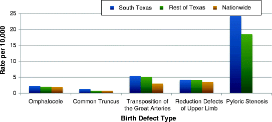
Fig. 6.11
Prevalence of selected birth defects by location. Source: Texas Birth Defects Registry, 2005–2009 data, 2004–2006 nationwide prevalence based on data from 11 U.S. states with active birth defects surveillance systems, obtained from Parker et al. (2010). No nationwide estimate could be found for pyloric stenosis
Infant Mortality
Infant mortality is the death of any liveborn infant within the first year of life [4]. The infant mortality rate is an important measure of overall community health, as high infant mortality rates could be indicative of poor maternal health, inadequate access to health care, or infant malnutrition [42]. In the USA, the infant mortality rate has greatly declined over the past few decades, from 20 infant deaths per 1,000 live births in 1970 [4] to about 6.1/1,000 in 2010 [43]. However, the USA still ranked 27th among industrialized nations in low infant mortality in 2008 [4]. This is mostly because of disparities that continue to exist among different race/ethnic groups in the USA [44]. The infant mortality rate in Texas has been lower than the nationwide rate since 1979. In 2008, the infant mortality rate for Texas was 6.2/1,000 compared to a national rate of 6.6/1,000 [42].
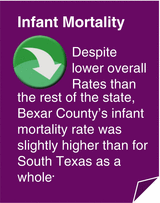
In the USA, the mortality rate for infants of African-American mothers in 2007 was 12.9/1,000, which was higher than the mortality rate for Hispanics (5.5/1,000) or non-Hispanic whites (5.6/1,000) [4]. Teenage mothers and mothers aged 40 or older have higher infant mortality rates than other maternal ages. The mortality rate is also slightly higher for male infants than for female infants [45]. The leading causes of infant mortality in the USA are birth defects, disorders related to preterm birth and low birth weight, sudden infant death syndrome, and maternal complications. Risk factors for infant mortality include no prenatal care, smoking, inadequate weight gain during pregnancy, and having a repeat pregnancy within 6 months or less [45, 46].
Infant Mortality in South Texas
The infant mortality rate in South Texas from 2005 to 2009 was 5.7/1,000. The South Texas infant mortality rate was lower than in the rest of Texas (6.3/1,000). The infant mortality rate for Hispanics in South Texas was similar to the rates for both Hispanics and non-Hispanic whites in the rest of Texas, and the infant mortality rate among non-Hispanic whites in South Texas was slightly lower than the mortality rate observed among non-Hispanic white infants in the rest of Texas (Fig. 6.12).
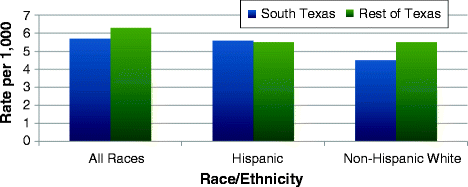
Fig. 6.12
Infant mortality rate by location and race/ethnicity, 2005–2009. Source: Center for Health Statistics Data Management Team, Texas Department of State Health Services
The gender pattern for infant mortality in South Texas was the same as that seen nationwide—male infants had a slightly higher mortality rate (6.0/1,000) than female infants (5.3/1,000). The infant mortality rate for Bexar County (6.3/1,000) was slightly but not statistically significantly higher than for South Texas as a whole (5.7/1,000). Webb County and the Lower Rio Grande Valley region had infant mortality rates that were slightly lower than the overall South Texas rate, but these differences were also not statistically significant (Fig. 6.13). Bexar County’s infant mortality rate might have been higher because of the relatively large percent of African-Americans that reside there compared to other South Texas areas, because African-Americans have a higher infant mortality rate than Hispanics and non-Hispanic whites.
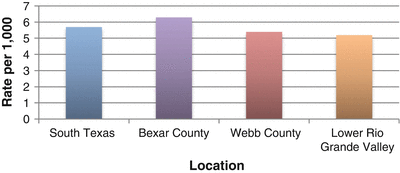
Fig. 6.13
Infant mortality rate in selected South Texas locations, 2005–2009. Source: Center for Health Statistics Data Management Team, Texas Department of State Health Services
Summary: Maternal and Child Health
Table 6.1
Summary table of birth defect prevalence, percentage of inadequate prenatal care, and infant mortality rates in South Texas, the rest of Texas, and nationwidea
Prevalence, incidence, or mortality | |||
|---|---|---|---|
Health indicator | South Texas | Rest of Texas | Multistate/Nation |
Inadequate prenatal care | 37.5 % | 40.4 % |
b
|
No preconception health care coverage | 55.5 % | 47.2 % |
b
|
Unintended pregnancy | 45.6 % | 45.6 % |
b
|
Preconception overweight | 25.2 % | 24.6 % |
b
|
Preconception obesity | 25.8 % | 20.8 % |
b
|
Neural tube defects | 8.2 per 10,000 | 6.8 per 10,000 |
b
|
Oral clefts | 17.3 per 10,000 | 16.6 per 10,000 |
b
|
Omphalocele | 2.2 per 10,000 | 2.0 per 10,000 | 1.9 per 10,000 |
Common truncus | 1.3 per 10,000 | 0.7 per 10,000 | 0.7 per 10,000 |
Transposition of the great arteries | 5.4 per 10,000 | 5.1 per 10,000 | 3.0 per 10,000 |
Reduction defects of the upper limb | 4.2 per 10,000 | 4.1 per 10,000 | 3.5 per 10,000 |
Pyloric stenosis | 24.2 per 10,000 | 18.5 per 10,000 |
b
|
Infant mortality | 5.7 per 1,000 | 6.3 per 1,000 | Infant mortality |
References
1.
Liu GG. Birth outcomes and the effectiveness of prenatal care. Health Serv Res. 1998;32:805–23.PubMed
2.
Kiely JL, Kogan MD. Prenatal care. In: Wilcox LS, Marks JS, editors. From data to action: CDC’s public health surveillance for women, infants, and children. Atlanta: U.S. Department of Health and Human Services, Centers for Disease Control and Prevention; 1994. p. 105–16.
3.
Frick KD, Lantz PM. How well do we understand the relationship between prenatal care and birth weight? Health Serv Res. 1999;35:1063–73.
4.
National Center for Health Statistics. Health, United States, 2011: with special feature on socioeconomic status and health. Hyattsville, MD: US Government Printing Office; 2012.
5.
March of Dimes. Teenage pregnancy. 2009. http://bit.ly/wfBXzB. Accessed June 2012.
6.
7.
March of Dimes Birth Defects Foundation. March of Dimes updates: is early prenatal care too late? Contemp Ob Gyn. 2002;12:54–72.
8.
Johnson K, Posner SF, Biermann J, Cordero JF, Atrash HK, Parker CS, et al. Recommendations to improve preconception health and health care – United States. MMWR Recomm Rep. 2006;55:1–23.PubMed
9.
10.
Centers for Disease Control and Prevention. Unintended pregnancy prevention. 2012. http://www.cdc.gov/reproductivehealth/unintendedpregnancy/index.htm/. Accessed May 2012.
11.
12.
Doherty DA, Magann EF, Francis J, Morrison JC, Newnham JP. Pre-pregnancy body mass index and pregnancy outcomes. Int J Gynecol Obstet. 2006;95:242–7.CrossRef
13.
14.
15.
16.
Centers for Disease Control and Prevention. Guidance for preventing birth defects. 2011. http://www.cdc.gov/ncbddd/birthdefects/prevention.html. Accessed May 2012.
17.
18.
Centers for Disease Control and Prevention. Facts about birth defects. 2011. http://www.cdc.gov/ncbddd/birthdefects/facts.html. Accessed Apr 2012.
19.
March of Dimes. Quick reference: birth defects. 2010. http://www.milesforbabies.org/professionals/14332_1206.asp. Accessed Apr 2012.
20.
Canfield MA, Collins JS, Botto LD, Williams LJ, Mai CT, Kirby RS, et al. Changes in the birth prevalence of selected birth defects after grain fortification with folic acid in the United States: findings from a multi-state population-based study. Birth Defects Res A Clin Mol Teratol. 2005;73:679–89.PubMedCrossRef
21.
Texas Department of State Health Services. Birth defects risk factor series. 2011. http://www.dshs.state.tx.us/birthdefects/bd_risk_main.shtm. Accessed Apr 2012.
22.
Texas Department of State Health Services. Birth defects risk factor series: neural tube defects. 2006. http://www.dshs.state.tx.us/birthdefects/risk/risk7-NTDS.shtm. Accessed Apr 2012.
23.
Texas Department of State Health Services. Birth defects risk factor series: oral clefts. 2005. http://www.dshs.state.tx.us/birthdefects/risk/risk-oralclefts.shtm. Accessed Apr 2012.
24.
25.
Dental, Oral and Craniofacial Data Resource Center. Oral Health U.S., 2002. Bethesda, MD: Dental, Oral and Craniofacial Data Resource Center; 2007.
26.
March of Dimes. Quick reference: cleft lip and cleft palate. 2007. http://www.milesforbabies.org/professionals/14332_1210.asp. Accessed Apr 2012.
27.
Birth Defects Epidemiology and Surveillance Branch. Report of birth defects among 2000–2009 deliveries. Publication No. 58-13601. Texas Department of State Health Services; 2012.
28.
Botto L, Khoury M, Mulinare J, Erickson J. Periconceptional multivitamin use and the occurrence of conotruncal heart defects: results from a population-based, case-control study. Pediatrics. 1996;98:911–7.PubMed
29.
30.
31.
32.
33.
34.
Texas Department of State Health Services. Birth defects risk factor series: omphalocele. 2009. http://www.dshs.state.tx.us/birthdefects/risk/risk8-omphalocele.shtm. Accessed Apr 2012.
35.
Medline Plus. Omphalocele. 2011. http://www.nlm.nih.gov/medlineplus/ency/article/000994.htm. Accessed Apr 2012.
36.
Texas Department of State Health Services. Birth defects risk factor series: conotruncal heart defects. 2007. http://www.dshs.state.tx.us/birthdefects/risk/risk15-conotrncl.shtm. Accessed May 2012.
37.
American Heart Association. Truncus arteriosus. 2012. http://www.heart.org/HEARTORG/Conditions/CongenitalHeartDefects/AboutCongenitalHeartDefects/Truncus-Arteriosus_UCM_307040_Article.jsp#.T4Xv9tmrZ8E. Accessed Apr 2012.
38.
Mayo Clinic Staff. Transposition of the great arteries. Mayo Clinic. 2010. http://www.mayoclinic.com/health/transposition-of-the-great-arteries/DS00733. Accessed Apr 2012.
39.
Mekdeci B, Schettler T. Birth defects and the environment. The collaborative on health and the environment. 2004. http://www.healthandenvironment.org/birth_defects/peer_reviewed. Accessed Apr 2012.
40.
Mayo Clinic Staff. Pyloric stenosis: introduction. Mayo Clinic. 2010. http://www.mayoclinic.com/health/pyloric-stenosis/DS00815. Accessed Apr 2012.
41.
Texas Department of State Health Services. Birth defects risk factor series: pyloric stenosis. 2002. http://www.dshs.state.tx.us/birthdefects/risk/risk21-pyl_sten.shtm. Accessed Apr 2012.
42.
Texas Department of State Health Services. Texas infant mortality rates. 2012. http://soupfin.tdh.state.tx.us/imr.htm. Accessed May 2012.
43.
Murphy SL, Xu J, Kochanek KD. Deaths: preliminary data for 2010. Natl Vital Stat Rep 2012;60.
44.
MacDorman MF, Mathews TJ. Understanding racial and ethnic disparities in U.S. infant mortality rates. NCHS Data Brief 2011;74.
45.
Mathews T, MacDorman MF. Infant mortality statistics from the 2004 period linked birth/infant death data set. Natl Vital Stat Rep 2007;55
46.
U S Department of Health and Human Services. Fact sheet: preventing infant mortality. 2006. http://www.hhs.gov/news/factsheet/infant.html. Accessed May 2012.